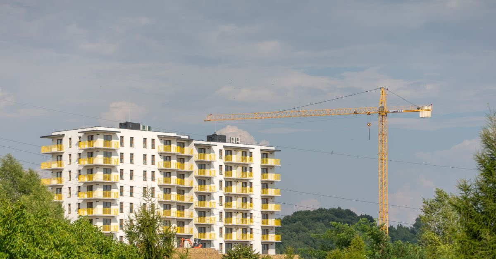
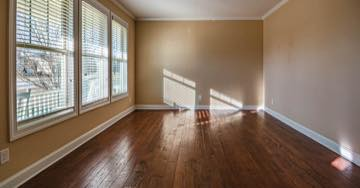

Afet konutu bedava değildir: borçlandırma koşullarını başvurmadan önce bilin
Hak sahipliği kabul edilen kişiye verilen konut karşılıksız değildir. Geri ödeme en az 20 yıl, faizsiz ve eşit taksitlidir; ilk taksit teslimden iki yıl sonra başlar.

Hak sahipliği başvurusu için süre, ilan tarihinden itibaren iki aydır. Başvurunun reddi hâlinde tebliğden itibaren 15 gün içinde itiraz edilebilir.
Hak sahipliği kabul edildiğinde çoğu kişinin duyduğu cümle şudur: "Devlet ev veriyor." Bu cümle eksiktir ve eksikliği pahalıya mal olur. Afet konutu karşılıksız bir bağış değil, borçlandırma karşılığı yapılan bir tahsistir.
Koşullar kötü değildir — faizsiz ve uzun vadelidir — ama bir borçtur; başvurmadan önce sayıları bilmek gerekir.
Borçlandırmanın üç kuralı
| Konu | Kural |
|---|---|
| Vade | En az 20, en çok 30 yıl; eşit taksitler |
| Faiz | Faizsiz olduğu belirtilmektedir |
| İlk taksit | Teslimden 2 yıl sonra başlar |
"Evini Yapana Yardım" yöntemiyle kendi konutunu yapanlarda ve orta hasarlı konut/iş yeri onarımlarında ilk taksitin, son kredi taksitinin ödenmesinden iki yıl sonra başladığı belirtilmektedir.
Neden başvurmadan önce hesaplamak gerekir?
Borçlandırma tutarı konutun maliyetine göre belirlenir ve tapu üzerinde bir yük doğurur. Bu, üç kararı doğrudan etkiler:
- Konutu kabul etmek mi, tazminat yolunu sürdürmek mi? İkisi birbirini dışlamaz ama
dosyanızı etkiler; müteahhide veya idareye açılacak davada elde edilen kazanımlar ayrıca değerlendirilir.
- Mirasçılar ne olacak? Borç, konutla birlikte devredilir. Ortak mülkiyet varsa
ödeme yükünün nasıl paylaşılacağı önceden konuşulmalıdır.
- Satış ve devir sınırlıdır. Tahsis edilen konutlar üzerinde belirli bir süre
tasarruf kısıtı uygulanabildiği için, "alıp satarım" planı çoğu zaman yürümez.
Taahhütname okumadan imzalanmaz
Başvuru, yazılı talep ve taahhütname ile yapılır. Taahhütname, borçlandırmayı ve tasarruf kısıtlarını kabul ettiğiniz belgedir. İmzadan önce bir örneğini isteyin, evde okuyun ve anlamadığınız maddeyi barodan sorun.
Başvuru ve süre
Hak sahipliği başvurusu, ilanın yapıldığı günden itibaren iki ay içinde mahallin en büyük mülkî amirine yapılır. Sürecin tamamı, itiraz basamakları ve gerekli belgeler için: hak sahipliği başvurusu.
Reddedilirse ne olur?
Ret kararı yazılı tebliğ edilir ve tebliğden itibaren 15 gün içinde itiraz edilebileceği belirtilmektedir. İtiraz da reddedilirse idari yargı yolu açıktır: iptal davası kural olarak tebliğden itibaren 60 gün içinde açılır.
En sık yapılan hata
Ret yazısını "bitti" sanıp dosyayı kapatmak. İtiraz süresi kısa ama gerçek bir haktır; üstelik itirazda çoğu zaman eksik belge tamamlanarak sonuç değişebilir.
Kiracı ve hissedar durumu
Sistem mülkiyet üzerine kuruludur: konut malike tahsis edilir. Kiracı bu kuyruğun içinde değildir; onun yolu kira yardımı, eşya sigortası ve tazminat davasıdır (kiracının deprem hakları).
Hisseli mülkiyette ise borçlandırma ve tahsis, hisse oranıyla bağlantılı yürür. Bina yıkıldığında kat mülkiyeti sona erip arsa payı oranında paylı mülkiyete dönüştüğü için, arsa payınızın doğru olup olmadığı bu aşamada da belirleyici olur.
Ne yapmalı?
- İlan tarihini öğrenin ve iki aylık süreyi süre takviminize işleyin.
- Taahhütnamenin bir örneğini başvurudan önce isteyin.
- Borçlandırma tutarını, vadeyi ve ilk taksit tarihini yazılı olarak sorun.
- Ret hâlinde 15 günlük itiraz süresini kaçırmayın; gerekçeyi ve eksik belgeyi yazın.
- Kararsızsanız barodan ücretsiz danışma alın — bu, imzadan sonra değil önce yapılır.
Kanuni dayanak
| Mevzuat | Ne diyor |
|---|---|
| 7269 sayılı Umumi Hayata Müessir Afetler Kanunu | Afet konutu tahsisini, hak sahipliğini ve borçlandırma esaslarını düzenler. |
| 7269 sayılı Kanun m.29 | Hak sahipliği başvurusunun mahallin en büyük mülkî amirine, iki ay içinde yazılı talep ve taahhütname ile yapılmasını öngörür. |
| Afet Sebebiyle Hak Sahibi Olanların Tespiti Hakkında Yönetmelik | Hak sahipliği tespitinin, ilanın ve itirazın usulünü belirler. |
Sık sorulanlar
Afet konutu karşılıksız mı veriliyor?
Hayır. Konut, hak sahibine borçlandırma karşılığında verilir. Borç faizsizdir ve uzun vadeye yayılır; ancak bir borçtur ve tapuya bu ilişki yansır.
Geri ödeme kaç yıl sürer ve faiz var mı?
Geri ödeme süresi 20 yıldan az, 30 yıldan çok olmayacak şekilde eşit taksitlerle belirlenir ve faizsiz olduğu belirtilmektedir.
İlk taksiti ne zaman ödemeye başlarım?
İhale ve emanet usulüyle yapılan konutlarda ilk taksit, inşaatın tamamlanıp hak sahibine tesliminden 2 yıl sonra başlar. Evini Yapana Yardım yönteminde ve orta hasarlı konut onarımlarında son kredi taksitinin ödenmesinden iki yıl sonra başladığı belirtilmektedir.
Kiracıysam afet konutu alabilir miyim?
Hak sahipliği mülkiyet ilişkisine bağlı yürür; afet konutu kural olarak malike tahsis edilir. Kiracının yolu kira yardımı, tazminat davası ve diğer destek başlıklarıdır.
Başvurum reddedilirse ne yapabilirim?
Ret kararı yazılı olarak tebliğ edilir; tebliğden itibaren 15 gün içinde itiraz edilebileceği belirtilmektedir. İtirazın da reddi hâlinde idari yargı yolu açıktır.
Bu konuyla ilgili araç
Süre takvimiİlan tarihini girip iki aylık başvuru süresinin ne zaman dolduğunu görün.Dilekçe üreticiHak sahipliği başvuru ve itiraz dilekçesini hazırlayın.İlgili rehberler
 Devlet destekleri
Hak sahipliği başvurusu: iki aylık süre, taahhütname ve faizsiz borçlandırma
Binası yıkılan veya ağır hasarlı malikler devletten konut ya da faizsiz kredi isteyebilir. Başvuru süresi ilan tarihinden itibaren iki aydır.
Devlet destekleri
Hak sahipliği başvurusu: iki aylık süre, taahhütname ve faizsiz borçlandırma
Binası yıkılan veya ağır hasarlı malikler devletten konut ya da faizsiz kredi isteyebilir. Başvuru süresi ilan tarihinden itibaren iki aydır.

Devlet destekleri Kira yardımı ve taşınma yardımı: kim alır, ne kadar sürer? Kira yardımının iki ayrı kaynağı var: afete özgü AFAD kararları ve kentsel dönüşüm mevzuatındaki kalıcı kira yardımı. İkincisinde kiracı da taraftır. Kira ve mülkiyet
Bina yıkıldıktan sonra mülkiyet ne oluyor? Kat mülkiyeti, arsa payı ve yeniden inşa
Ana yapı tamamen yıkılırsa kat mülkiyeti sona erer; geriye arsa payı oranında paylı mülkiyet kalır. Yeni dairenizin büyüklüğünü bu oran belirler.
Kira ve mülkiyet
Bina yıkıldıktan sonra mülkiyet ne oluyor? Kat mülkiyeti, arsa payı ve yeniden inşa
Ana yapı tamamen yıkılırsa kat mülkiyeti sona erer; geriye arsa payı oranında paylı mülkiyet kalır. Yeni dairenizin büyüklüğünü bu oran belirler.